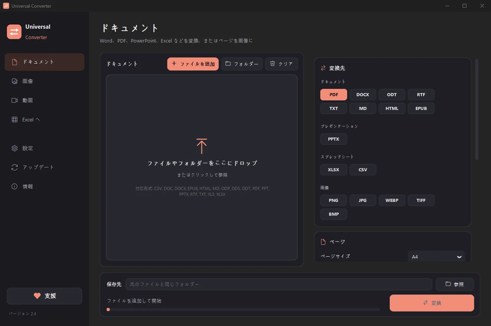

PDF を好きなサイズに圧縮
PDF を追加し、許される最大サイズを入力します。Universal Converter はファイルが収まるまで中の画像を少しずつ小さくし、いちばんきれいな版を残します。文字や図はくっきりしたままで、元のファイルはそのままです。
無料 · Windows 10 / 11（64 ビット） · ウイルススキャン結果Windows がダウンロードやアプリをブロックしますか？ Microsoft Store から入手してください。同じ無料アプリで、Windows が信頼しています。
Mac 版をダウンロード Apple シリコン、macOS 12 以降
インストールと更新の方法
- ダウンロードした .dmg を開き、Universal Converter を「アプリケーション」にドラッグします。
- アプリを開きます。初回は Apple の署名がないため macOS にブロックされるので、「完了」をクリックします。
- 「システム設定」>「プライバシーとセキュリティ」を開いて下にスクロールし、「このまま開く」をクリックしてパスワードを入力します。これは最初の 1 回だけです。
更新：初回起動時に許可すると、起動のたびに新しいバージョンを確認し、デジタル署名を検証して、選んだタイミングでインストールします。
Android 版をダウンロード Android 10 以降
インストールと更新の方法
- スマートフォンで「Android 版をダウンロード」をタップします。
- ダウンロードしたファイルを開きます。Android に求められたら、ブラウザーまたはファイル管理アプリにアプリのインストールを許可します。
- 「インストール」をタップします。
更新：アプリは 1 日に 1 回ほど確認し、新しいバージョンがあるとお知らせします。同じ方法でダウンロードして上書きインストールすれば、設定はそのまま残ります。
手順
- Universal Converter を開き、左側でドキュメントと PDFを選びます。
- ファイルやフォルダーをウィンドウにドラッグするか、「ファイルを追加」をクリックします。
- 「変換先」で「PDF を圧縮」を選び、目標サイズを KB または MB で入力します。
- 「変換」をクリックします。新しいファイルは元のファイルの隣か、選んだフォルダーに保存されます。

なぜオフラインなのか
Universal Converter はご自身の端末で処理します。ファイルはプライベートなまま、大きなファイルも問題なく、インターネットがなくても使えます。
ほかにできること
- PDF を Word に変換
- Word 文書を PDF に変換
- 複数のファイルを 1 つの PDF にまとめる
- PDF のページを JPG 画像に変換
- スキャンした文書を編集できる Word に変換
- JPG、PNG、WEBP などの間で画像を変換
- 画像のサイズ変更・ファイルサイズへの縮小
- 写真を 1 つの PDF にまとめる
- 画像の文字をコピー（OCR）
- アップロードせずに動画を圧縮
- MP4、MKV、WebM、MOV、AVI の間で動画を変換
- 動画の音声を MP3 で保存
- 動画から GIF を作る
- PDF の表を Excel に取り出す
- 銀行の取引明細 PDF を Excel に変換
- PDF の請求書から表を Excel に抽出
- PDF に署名する
- PDF フォームに入力する